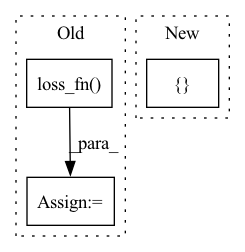

Pattern ID :37295
Before Change
pred_tags = self.model(text)
pred_tags = pred_tags.view(-1, pred_tags.shape[-1])
true_tags = true_tags.view(-1)
batch_loss = self.loss_fn( pred_tags, true_tags)
batch_acc = self.accuracy(pred_tags, true_tags)
epoch_loss += batch_loss.item()
epoch_acc += batch_acc.item()
return epoch_loss / len(iterator), epoch_acc / len(iterator)After Change
def evaluate(self, iterator, full_report=False):
epoch_loss = 0
true_tags_epoch = []
pred_tags_epoch = []
self.model.eval()
with torch.no_grad():
// similar to epoch() but model is in evaluation mode and no backpropIn pattern: SUPERPATTERN
Frequency: 3
Non-data size: 3
Instances Fragment ID: 107411831
Project Name: yoseflaw/nerindo
Commit Name: a70e55e7c0489cba1290ebd51512a9e878c6e0ed
Time: 2020-08-09
Author: yosefardhitowin@gmail.com
File Name: nerindo/trainer.py
M Class Name: Trainer
N Class Name: Trainer
M Method Name: evaluate(3)
N Method Name: evaluate(2)
M Parent Class: object
N Parent Class: object
M File Name: nerindo/trainer.py
N File Name: nerindo/trainer.py
M Start Line: 55
M End Line: 69
N Start Line: 85
N End Line: 104
Before Change
pred_tags = pred_tags.view(-1, pred_tags.shape[-1])
// flatten true_tags to [sent len * batch size]
true_tags = true_tags.view(-1)
batch_loss = self.loss_fn( pred_tags, true_tags)
batch_acc = self.accuracy(pred_tags, true_tags)
batch_loss.backward()
self.optimizer.step()
epoch_loss += batch_loss.item()After Change
def epoch(self):
epoch_loss = 0
true_tags_epoch = []
pred_tags_epoch = []
self.model.train()
for batch in self.data.train_iter:
// words = [sent len, batch size] Fragment ID: 107411826
Project Name: yoseflaw/nerindo
Commit Name: a70e55e7c0489cba1290ebd51512a9e878c6e0ed
Time: 2020-08-09
Author: yosefardhitowin@gmail.com
File Name: nerindo/trainer.py
M Class Name: Trainer
N Class Name: Trainer
M Method Name: epoch(1)
N Method Name: epoch(1)
M Parent Class: object
N Parent Class: object
M File Name: nerindo/trainer.py
N File Name: nerindo/trainer.py
M Start Line: 31
M End Line: 51
N Start Line: 61
N End Line: 83
Before Change
bag_logits, bag_labels, bag_attn_list = self.compute_bag_labels_logits_and_attn_maps(batch)
if self.n_classes > 1:
loss = self.loss_fn( bag_logits, bag_labels.long())
else:
loss = self.loss_fn(bag_logits.squeeze(1), bag_labels.float())
predicted_probs = self.activation_fn(bag_logits)After Change
predicted_probs = predicted_probs.squeeze(dim=1)
results = dict()
if self.analyse_loss and stage in [ ModelKey.TRAIN, ModelKey.VAL Fragment ID: 107411837
Project Name: microsoft/hi-ml
Commit Name: e2c1ca1cb4d224378df8209befd08e7ebcc136d5
Time: 2022-10-12
Author: 37396332+kenza-bouzid@users.noreply.github.com
File Name: hi-ml-cpath/src/health_cpath/models/deepmil.py
M Class Name: BaseDeepMILModule
N Class Name: BaseDeepMILModule
M Method Name: _shared_step(4)
N Method Name: _shared_step(4)
M Parent Class: LightningModule
N Parent Class: LightningModule
M File Name: hi-ml-cpath/src/health_cpath/models/deepmil.py
N File Name: hi-ml-cpath/src/health_cpath/models/deepmil.py
M Start Line: 302
M End Line: 325
N Start Line: 311
N End Line: 334